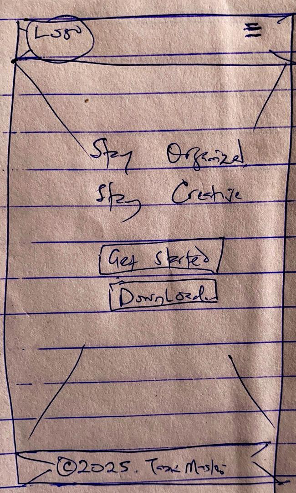
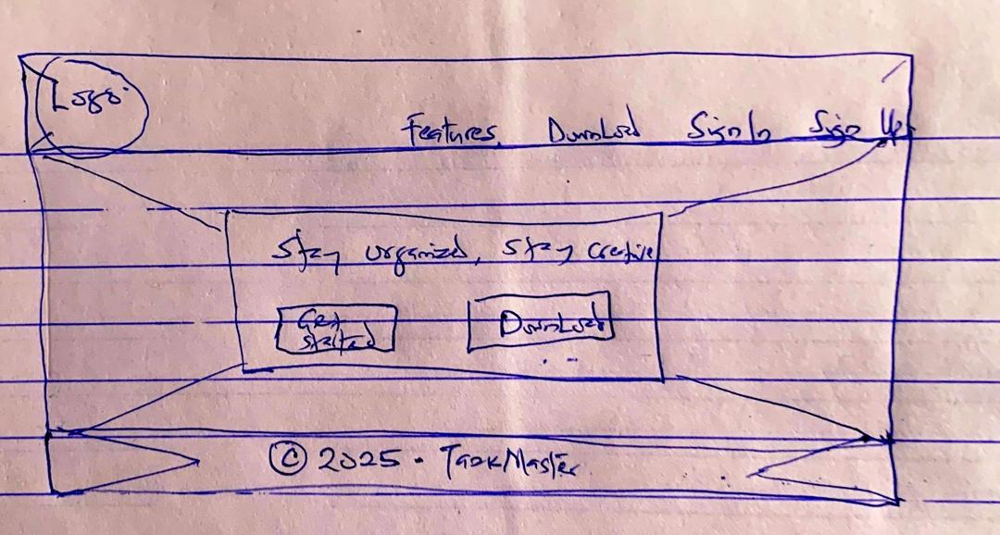

Font 2:Roboto, sans-serif – Used for body text.
Site Name
Site Name: TaskMaster
Logo: (Logo image to be added)
Description: This name represents a site dedicated to helping individuals and teams manage their tasks efficiently, stay organized, and boost productivity.
Optional domain availability: taskmaster-org.com
Site Purpose
The TaskMaster app aims to provide users with an intuitive, web-based platform to create, manage, and track tasks efficiently. It allows users to organize tasks by project, due date, and priority. With features like task status tracking and deadline reminders, users can ensure that their tasks are completed on time.
Scenarios
- How do I create a new task, categorize it, and set a due date?
- Can I prioritize my tasks, and how do I mark them as completed?
- Where can I find an overview of all my tasks with their deadlines?
Color Schema
The color scheme for the TaskMaster site is designed to be clean, calm, modern, focused, and accessible:
Primary Colors:
- #3498db (Blue) – Used for buttons, links, and highlights.
- #2ecc71 (Green) – Used for success messages, task completion, and positive interactions.
Secondary Colors:
- #95a5a6 (Gray) – Used for background elements, borders, or any section that needs a calm, unobtrusive feel.
- #ffffff (White) – Used for background areas, card section, or forms.
- #ecf0f1 (Light Blue) – Used for hover states.
Accent Colors:
- #f39c12 (Yellow) – Used for warnings about deadlines.
- #e74c3c (Red) – Used for negative actions like deleting tasks or showing overdue tasks.
Typography
Font 1: 'Playfair Display' – Used for headings.
Font 3: Georgia, serif – This will be used for quotes or testimonials on the site for emphasis.
Wireframe
Login/Sign Up Page
Mobile View
Desktop View
